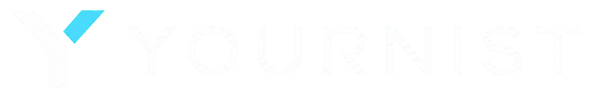
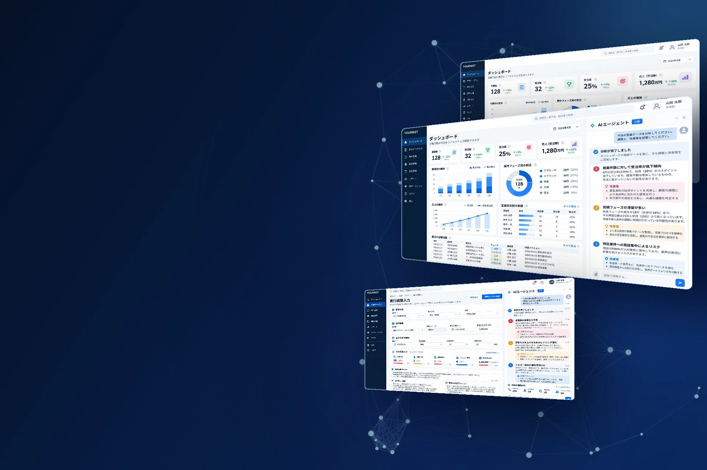
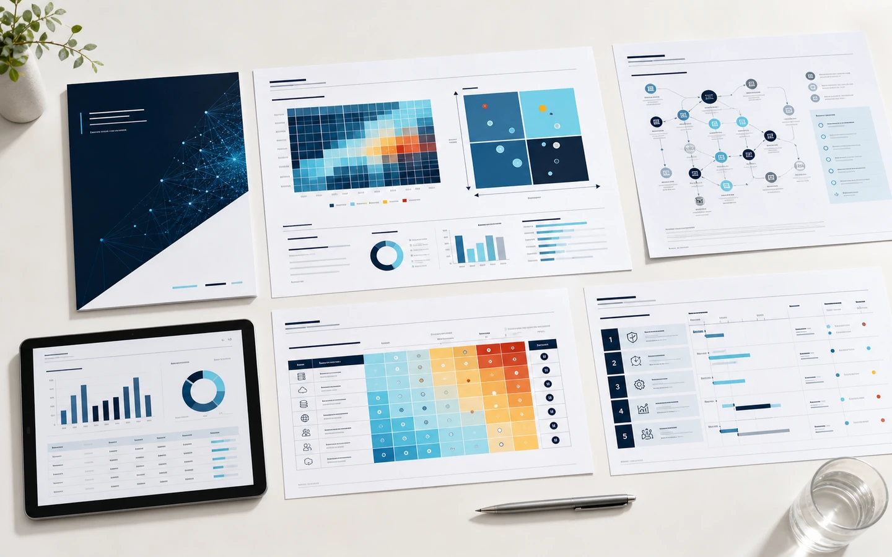
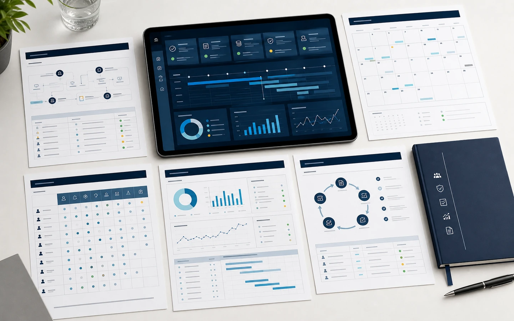

無料相談
こんな企業に
どなたでも。AI導入を検討し始めた段階で、何から手をつけるかを整理したい企業。
プラン内容
- プラン選定
- 現状のヒアリング
- 次の進め方のご提案


AI MANAGEMENT SOLUTION人材業界向け AI経営ソリューション
YOURNISTは、AIの相談から診断・開発・導入・定着までを一気通貫で支える「AI経営ソリューション」です。AIで生まれた余力を“攻め”に再投資し、成果につなげます。
OUR VIEW
AIは、業務を効率化するだけの道具ではありません。営業も、採用も、経営判断も。AIを前提に組み立て直した会社が、これからの成果を大きく伸ばしていきます。
効率化で生まれた時間と人材を、顧客獲得や新規事業へ。人とAIがそれぞれの強みを発揮する会社へ、最初の一歩から私たちが伴走します。
OUR MISSION
効率化は、
ゴールでは
ありません。
AIで生み出した余力を、
“守り”の効率化から“攻め”の成果へ。
浮いた時間も人材も、使わなければ単なる余剰です。顧客獲得や新規事業へ再投資してはじめて、成果になります。
私たちはAIの相談から開発・運用までを一気通貫で担い、人材業界の企業が“攻め”に転じる土台をつくります。
提供サービス
何からAI化すべきか分からない段階から、実際の業務成果につなげるところまで。状況に合わせて、4つのプランをご用意しています。
どなたでも。AI導入を検討し始めた段階で、何から手をつけるかを整理したい企業。

何からAI化すべきか分からない企業。現状を整理し、取り組む順番まで描きます。
AIで実現したいことが明確な企業。現場に合わせて、必要なツールやアプリを開発します。

AIを導入し、実際の業務成果までつなげたい企業。コンサルティングと開発をまとめて進めます。
料金は、内容に応じてお見積りします。まずはお気軽にお問い合わせください。
無料相談を申し込む→導入検討から定着まで。相談から導入までワンストップで対応します。
FLOW
何から始めるべきかを一緒に整理し、成果を最大化するための企画と戦略を立案します。
現状分析からAI活用の企画、KPI設計、ロードマップまでを描きます。
実行を踏まえた要件定義をもとに、高品質なAIツールや業務アプリを開発します。
システム導入と従業員の教育、定期的な改善まで、長期的にサポートします。
CHALLENGES
営業から勤怠・給与まで、人材業界の業務は属人化とデータの分散が起きやすい領域です。情報を一元化し、見える化することで、意思決定の質とスピードを高めます。
WHY YOURNIST
人との繋がりを大切にする力、AIを活用するための知識、そして安全に導入するためのIT基盤の知見。3つの領域を、ひと続きでご提供します。
組織の価値観や事情、戦略背景を理解し、理論だけでなく熱意をもって取り組みます。お客様との長期的な信頼関係を築きます。
現場業務を徹底的に理解した上で要件定義を行い、判断→実行→結果を蓄積して、成功確率の高い施策を提案します。
現状のインフラを把握した上で導入し、適切なセキュリティと可用性を確保。IT知見がなくても、分かりやすく丁寧にご説明します。
CONTACT
導入を検討し始めた段階で構いません。人とAIを繋ぎ、企業の可能性を成果に変える方法を、一緒に考えます。